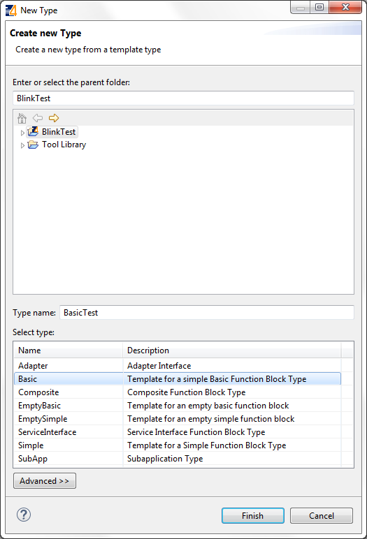
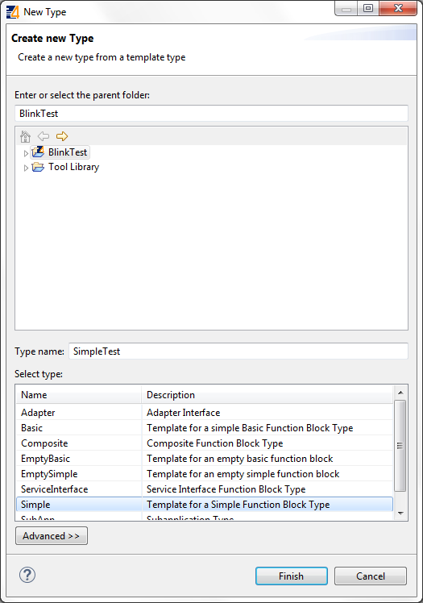
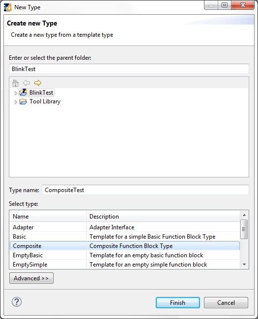
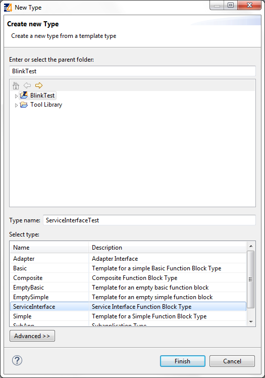
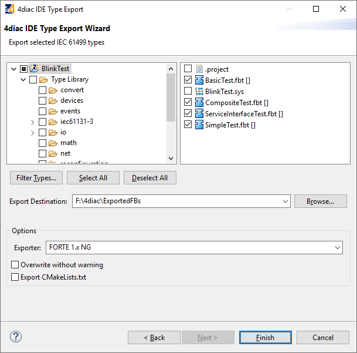
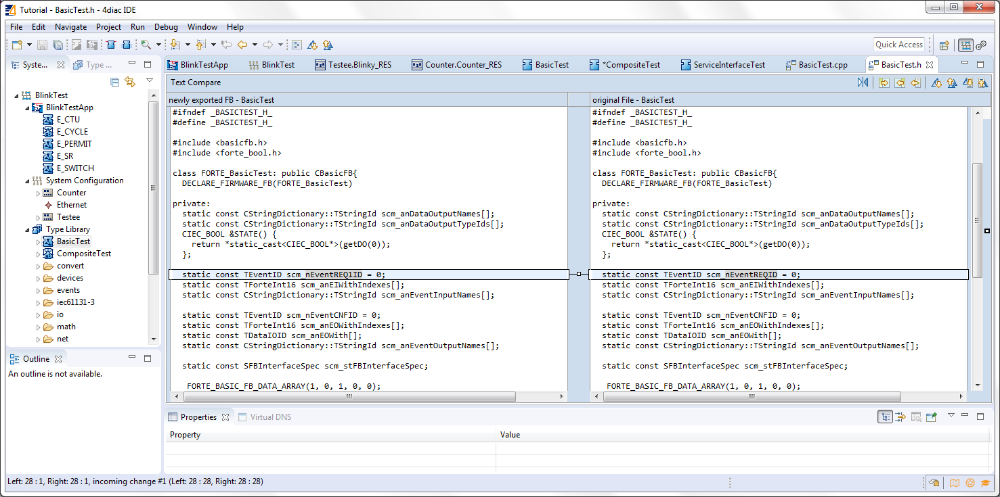
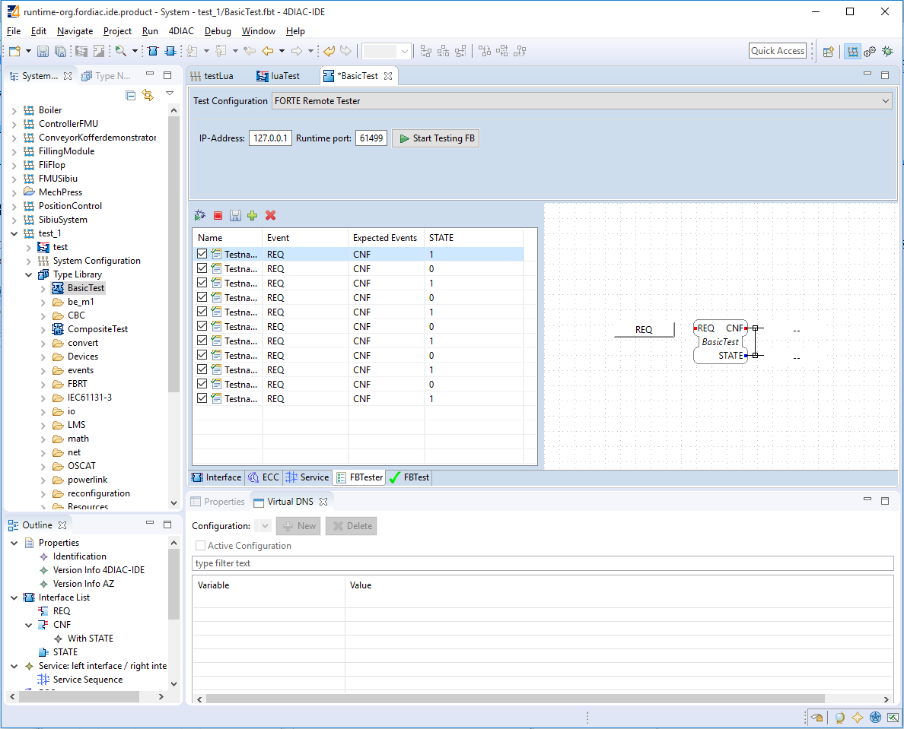

This page is part of a guide that gives a walk-through of the major 4diac IDE features.
In this tutorial, you will learn how to create your own Function Block (FB). There are several different types of Function Blocks, we will show how to create a Basic, a Simple, a Composite and a Service Function Block. The new FBs are then available in the FB Palette for use in the Applications of the System.
New FBs need to be created when the desired functionality doesn't exist as a library FB or multiple FBs should be combined into just one FB. First, you have to define the interface with its input and output events and data. Afterwards, define the FB internals, which are defined by the kind of FB.
We implement the Blinking functionality inside all three different FB types to introduce their creation process. All four types do the same thing in different ways. At an event input, the Boolean data output will be toggled and the event output will message that the value has changed.
Create a new Function Block by selecting:
Follow the instructions in the creation wizard. For this tutorial, select BlinkTest as the parent folder. Choose a name for the new FB, we name it BasicTest. Afterwards, select the type of FB you want to create, in this case we choose Basic. The Function Block Type Editor (FBT Editor) opens after clicking Finish.
The Basic FB already has some inputs and outputs which are commonly used. If you need another, just drag and drop it from the Palette into the FB or right-click at the FB to set another input or output. Of course you can also delete them by pressing the Delete key or right-click → Delete.
In this example, we are doing a Blinking Function Block.
This should have then one input event that triggers the change, one output event as an indicator of a change, and a Boolean data output for the state.
By default, the Boolean output is set to false and remembers the state until a new event comes in and converts the Boolean to true until the next input arrives.
Right now, the Basic FB has more inputs and outputs than we need.
Select the ECC (Execution Control Chart) tab at the bottom of the central editing area, and you will see a state machine graph. This is the default one, and here's where you actually code the behavior of the Function Block. Purple boxes are states (the initial one is double-framed), the yellow ones represent the Algorithms that are executed when the Function Block enters the state, and the green ones are the triggered events after the algorithm. The arrows between them represent Events that arrive at the Function Block. Conditions are assigned to these arrows. A "1" means that it will always change state after the algorithm. Events are consumed only one at a time. The small numbers at the beginning of the transition are the priorities, in case more than one transition is possible. Don't try to understand everything at once. With a little practice, the terms and concepts become clearer.
On the right side, you can write your code. As the name implies, in the turnOn algorithm we set your STATE variable to TRUE. Using the name of the Data Output (or input or internal variable), you access its value for reading and writing.
At the beginning, the FB is in the START state. When a REQ event arrives, it jumps to the On state, executes algorithm turnOn and triggers the CNF output event. When the next event arrives, it jumps to Off state, executes algorithm turnOff and triggers the CNF output event. That's how the ECC works.
In case the transition with a "1" had also a REQ event, an infinite loop won't happen since the event is consumed only once. You would need to REQ events to go back.
Exporting the Function Block and testing are presented after the chapter Create a Composite and Service Function Block.
The Simple FB has only one algorithm and no ECC.
Create a new Type by following the instructions in the creation wizard. For this tutorial, select BlinkTest as the parent folder. Choose a name for the new FB, we name it SimpleTest. Afterwards, select the type of FB you want to create, in this case we choose Simple. The Function Block Type Editor (FBT Editor) is opening after clicking Finish.
That's all you need to do for the Simple Function Block.
Create a new Type following the instructions in the creation wizard. For this tutorial, select BlinkTest as the parent folder. Choose a name for the new FB, we name it CompositeTest. Afterwards, select the type of FB you want to create, in this case we choose Composite. The Function Block Type Editor (FBT Editor) is opening after clicking Finish.
That's all you need to do for the Composite Function Block.
Create a new Type by following the instructions in the creation wizard. For this tutorial, select BlinkTest as the parent folder. Choose a name for the new FB, we name it ServiceInterfaceTest. Select then the type of FB you want to create, in this case we choose Service Interface. The Function Block Type Editor (FBT Editor) opens after clicking Finish.
Change the interface as before.
That's it. The behavior of the Service Function Block must be implemented directly in the code that's generated from it. You will need to implement the functionality for each incoming event, manage the internal variables and send output events by yourself after exporting. Below, you find the code for this example.
4diac IDE provides an export filter to generate C++ code which can be included in the 4diac FORTE development process. In order to export a Function Block Type, either
Select the FBs to be exported on the right side of the wizard. It makes sense to use your own folder, we choose ext_modules/EXAMPLE_TEST. Before exporting one or more Function Block Types, the Export Destination and the Exporter (FORTE 1.x) have to be chosen. Furthermore, the version of the 4diac FORTE C++ format has to be selected. We'll export the three we just created.
Attention: Make sure that not all FBs are checked, otherwise all existing FBs will be exported!
After clicking the button Finish and no warning pop up everything went fine. Your exported FBs are in the folder you chose before.
If a dialog window pops up, something went wrong and it will inform you that the export to the 4diac FORTE C++ format was not successful.
If the output directory already contains an older version of the exported Function Block Type, it is possible to overwrite the old file or to open a Merge Editor, where manual merges can be performed.
Now that you have exported the Service Interface Function Block, you need to edit it in order to get the desired behavior. Open the ServiceTest.cpp file that was recently exported, and take a look at the executeEvent function at the bottom.
The comment reminds us to set an output event, replace #error add code for REQ event! with STATE() = !STATE(); for the toggling effect.
To get or set an internal variable or data input in the 4diac FORTE template, you use the name and the parentheses. The sendOutputEvent is the specific function to send output events.
Currently, only the management (i.e. creation, deletion and modification) of the Basic, Simple, Composite, Service Interface and Sub Application (SubApp) Function Block types as well as Adapter types are supported. The management of Device and Resource types is currently not supported.
The FBTester tab of the bottom of the central editing area is available for all Function Blocks. It allows testing the functionality of a Function Block by executing it on a target device. But first, 4diac FORTE must know about these FBs. So, you need to build 4diac FORTE using these Function Blocks just created. A guide to build your own 4diac FORTE is here. See the section "Add external modules" on adding the files for compilation.
Once compiled, you can go to the FBTester, select 4diac FORTE Remote Tester in Test Configuration, and then set the IP and PORT for the 4diac FORTE that was compiled with the Function Blocks to be tested. The default is locally, but you can test them on any reachable 4diac FORTE.
Press Start Testing FB, and the FB will be loaded into 4diac FORTE, and you can manually set input values of your FB, trigger input events and inspect the resulting output events and output data. Furthermore. you can store input/output sequences and execute them to automatically test a certain functionality of your FB.
In the next step you will see other basic features
If you want to go back to the distributed application running remotely, here's a link
Step 3 - Deploy Applications Remotely
If you want to go back to the Start Here page, we leave you here a fast access